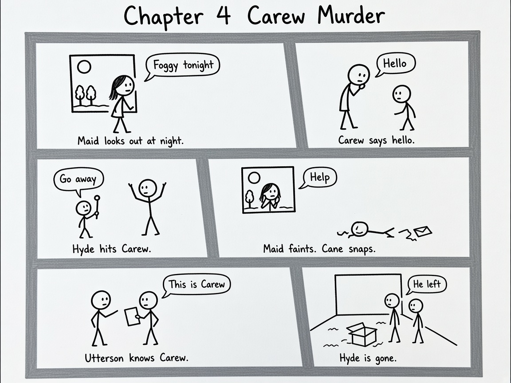

English homework. Leo. Open this file if Word will not open.
Original paragraph
Mr Stevenson presents Mr Hyde as a very mysterious man who creates a sense of discomfort in the reader and in Utterson. As Utterson approaches him for the first time Mr Hyde would not show his face he gives a strong feeling of deformity he isnt seen as human it wasnt a man it was like some damned juggernaut. The quote he gives a strong feeling of deformity shows us that he doesnt seem right he seems like he is all messed up physically and mentally. It wasnt a man it was like some damned juggernaut shows us that he didnt seem like a man he seemed like a overwhelming force.
Rewritten PEAL paragraph in green
Stevenson presents Mr Hyde as a mysterious man. He makes Utterson feel uncomfortable. He makes the reader feel uncomfortable as well. Enfield says it wasnt like a man. He says Hyde was like some damned Juggernaut. This metaphor makes Hyde seem like a huge crushing force. He does not seem human. Enfield also says Hyde gives a strong feeling of deformity. Nobody can say what is wrong with his face. This makes him feel hidden and scary. Utterson later sees that Hyde is pale and dwarfish. He still looks deformed even with no clear injury. Stevenson does this so Hyde stays a mystery. Evil feels hidden in London.
PEAL
Point. Hyde is mysterious and uncomfortable to meet.
Evidence. Juggernaut. Feeling of deformity. Pale and dwarfish.
Analysis. The metaphor makes him not human. The missing face details make him scary.
Link. Stevenson keeps Hyde hidden so the evil stays a mystery.
From last week and Chapter 3 Dr Jekyll Was Quite at Ease.
Heresy means a belief against religion.
Hide bound means not open to new ideas.
Jekyll tells Utterson not to worry about Hyde.
Utterson is worried about Jekylls will.
Jekyll looks at ease but he is hiding a secret.
He says he is very low.
He says the moment I choose I can be rid of Mr Hyde.
He calls Lanyon a hide bound pedant.
He has a slyish look even though he seems kind.
Appearance. Big and well made. Smooth face. About fifty. He looks kind but a bit sly. large well made smooth faced man of fifty with something of a slyish cast
Personality. Friendly in public. Secret and defensive about Hyde. I am very low Utterson
Life. Wealthy doctor. Nice house. Dinner parties.
Relationships. Friend of Utterson. Fallen out with Lanyon. He protects poor Hyde.
What he says. Keep the will. He can drop Hyde any time. the moment I choose I can be rid of Mr Hyde
What he does. Makes Utterson promise to help Hyde.
Context. He looks like a perfect gentleman. A good name can hide sin.
Role. The title says he is at ease. This is ironic.
insensate = without feeling. tempest = a violent storm. ape like fury = animal rage.
1. The maid looks out of her window at night in the fog.
2. Sir Danvers Carew says hello in a polite way.
3. Hyde beats Carew with a cane in ape like fury. The cane snaps.
4. The maid faints then calls for help. Police find a letter for Utterson.
5. Utterson says the dead man is Carew. He knows the cane.
6. Police search Hydes rooms in Soho. The rooms are fancy but smashed. Hyde has gone.
Stickman comic

Panel 1. Maid looks out at night. Foggy tonight
Panel 2. Carew says hello. Hello
Panel 3. Hyde hits Carew. Go away
Panel 4. Maid faints. Cane snaps. Help
Panel 5. Utterson knows Carew. This is Carew
Panel 6. Hyde is gone. He left
How does the style change? It starts with scary description of the murder. Then it sounds more like a police case with facts.
Where is it more descriptive and why? The murder and the foggy trip to Soho. Words like ape like fury and storm of blows make Hyde feel like an animal. The fog hides him. This shocks the reader.
Where is it more factual and why? The police part. Names times the broken cane the letter and the empty rooms. It is called a murder case so it reads like evidence. The facts prove Hyde did it. They also show he has escaped.